What is the Boilers?
The equipment used for producing and transferring steam is called: Steam generators/Boilers.
- Relative position of Hot gases and Water
- Fire Tube Boiler.
- Horizontal Return Tubular
- Locomotive Fire Box
- Scotch Marine
- Vertical Tubular
- Water Tube Boiler
- Babcock and Wilcox Boiler (straight but inclined tubes which connect the headers).
- Stirling Boiler (multitubular boiler having bent tubes that connect boiler drums to headers).
The hot gases passes through the tubes that are surrounded by water. Fire tube boilers are also known by certain common names
The water passes through the tubes and the hot gases produced by combustion of fuel, flow outside. This type of Boilers designated by the following common names
- Method of firing
- Internally fired Boilers
- Lancashire Boilers
- Locomotive Boilers
- Scotch Boilers
- Externally fired Boilers
The furnace is provided inside the boiler shell and is completely surrounded by water cooled surfaces. This method of firing is used in
The furnace is provided outside/ under the boiler. It has an advantage that its furnace is simple to construct and can easily be enlarged, as and when required. This method of firing is used in Babcock and Wilcox Boiler.
- Pressure of Steam
- High pressure Boilers
- Babcock and Wilcox Boiler
- Lamont Boilers
- Velox Boilers
- Benson Boilers etc.
- Low pressure Boilers
- Cochran Boilers
- Cornish Boiler
- Lancashire Boiler
- Locomotive Boiler
Boilers producing steam 80 bar and above are called High pressure boilers. E.g.
Boilers producing steam Lower than 80 bar are called Low pressure boilers. E.g.
- Method of circulation of water
- Natural circulation method
- Forced circulation method
Circulation set up by convection current or by gravity.
Circulation set up for high pressure steam through pumps.
Boiler Mountings
The necessary devices installed or mounted for the safety of boiler and its control are called boiler mountings
- Boiler Mountings for safety
- Two water level indicators–2
- Two safety valves.
- Combined high steam and low water safety valve.
- Fusible plug.
- Boiler Mountings for control
- Pressure gauge
- Junction or stop valve
- Feed check valve
- Blow-off cock
- Man hole and mud hole
Boiler Accessories
The devices which are installed in the boiler for their efficient operation and smooth working are called Boiler Accessories.
- Boiler Accessories for efficient operation.
- Water heating devices.
- Water feeding devices.
- Super heater
- Economizer
- Air preheater
Boiler Mountings
Water Level Indicator
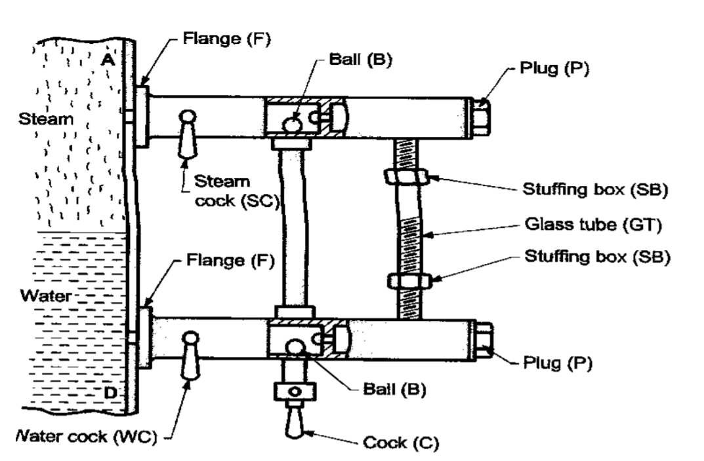Pressure Gauge(Bourdon's)
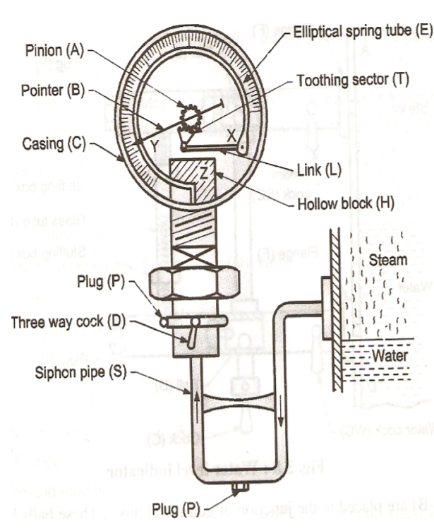Safety Valves
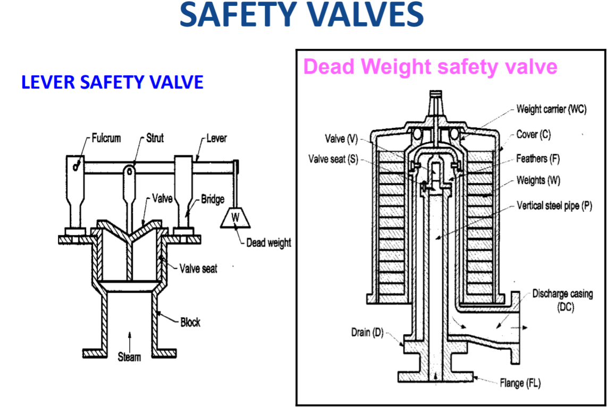 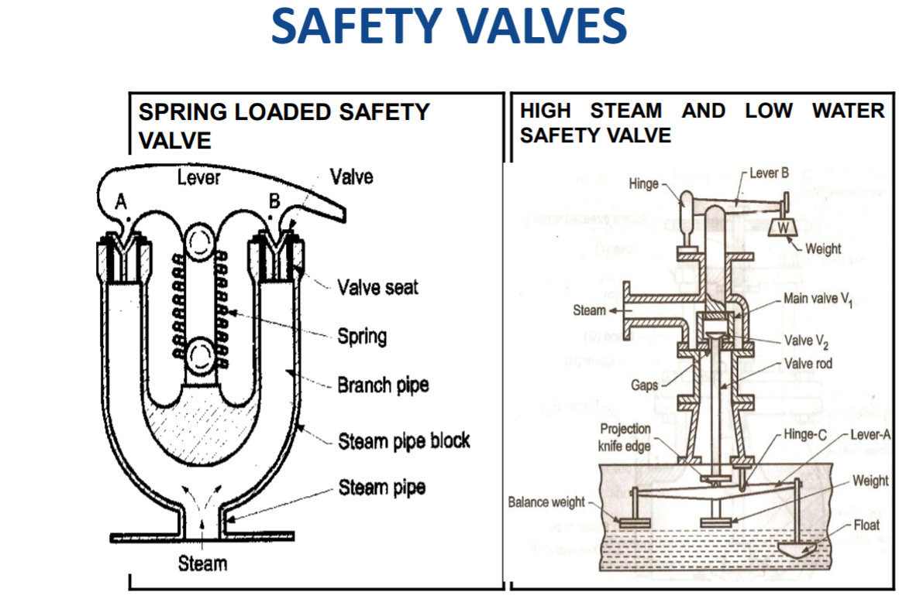Iunction Valve
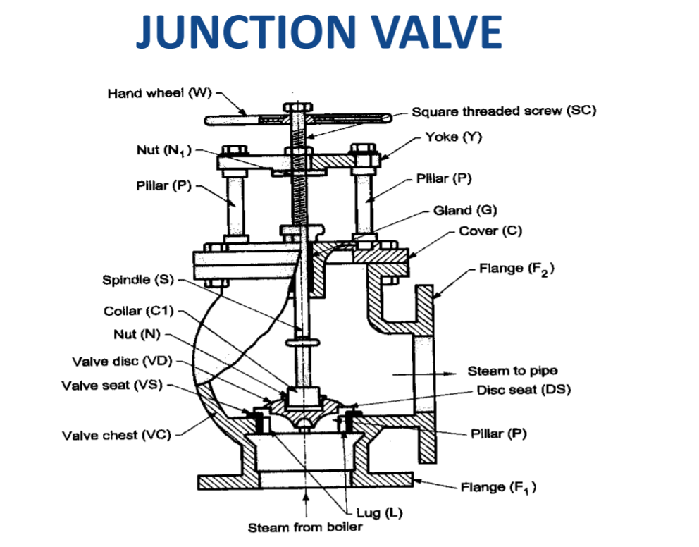Feed Check Valve
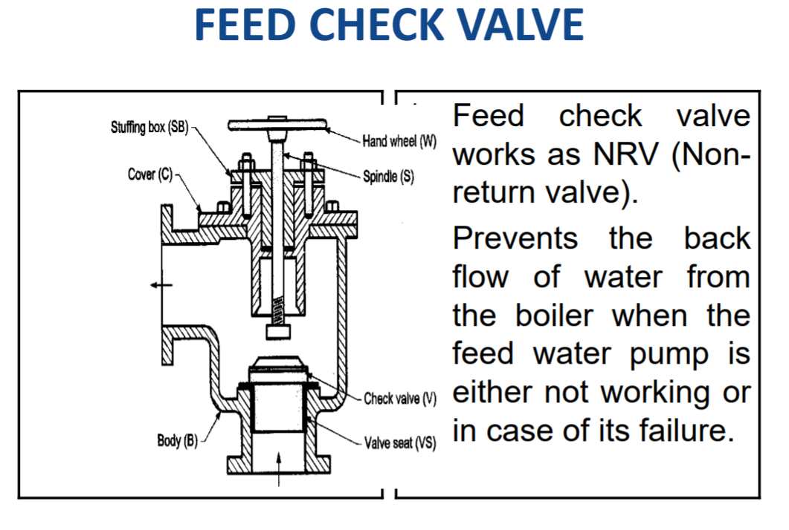Blow-Off Cock
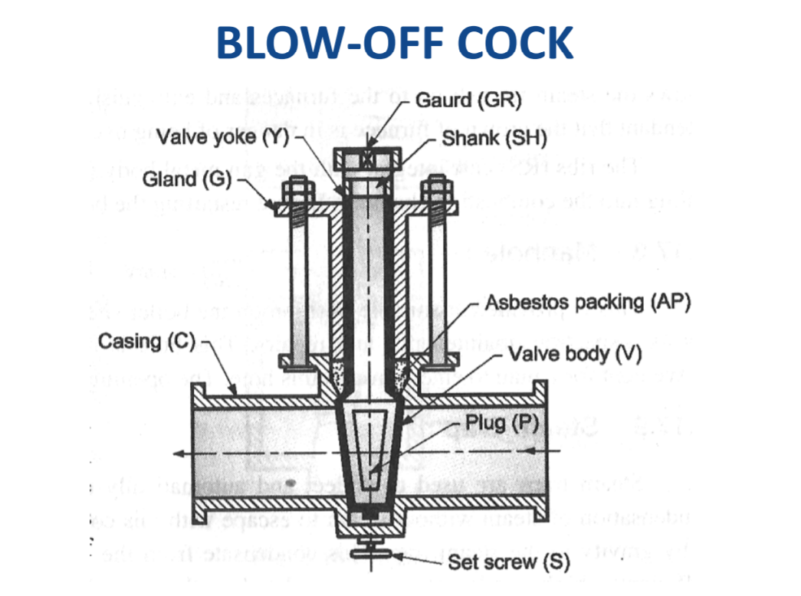Fusible Plug
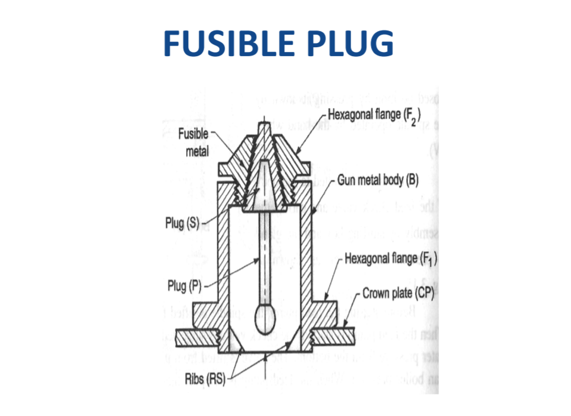Manhole
This is provided at suitable position on the boiler shell so that the man can enter into boiler shell for inspection, maintenance and repairs. This hole is usually made in elliptical shape of the size convenient for a man to enter through this hole. The opening is closed by steam tight cover.
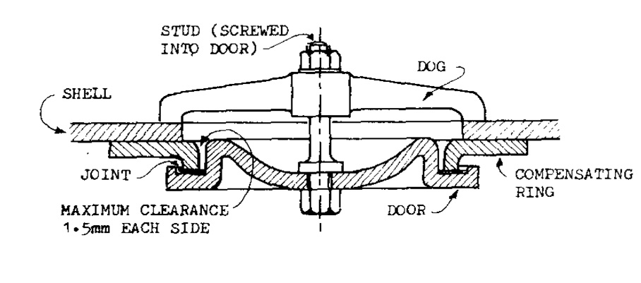Steam Trap
Steam trap is used to collect and automatically drain away the water resulted from partial condensation of steam without steam to escape with this condensate through a valve. The valve after draining the condensate is closed. Is presses the leakage of steam from the trap
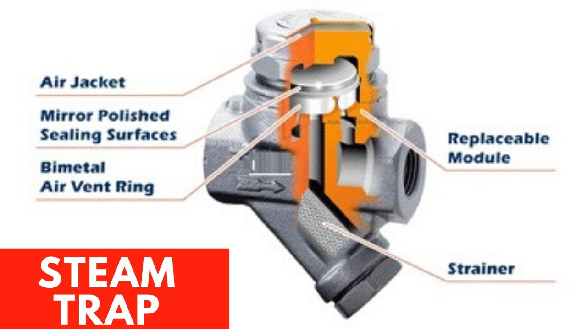Antipriming Pipe
It is attached below the stop valve to avoid the water particles being carried away along with steam. It has closed pipe with closed ends of 1m and 2m length. The top side of the pipe has perforations. When the steam passes through it, due to inertia effect, the moisture of steam falls into the pipe and the steam with reduced moisture passes into the stop valve.
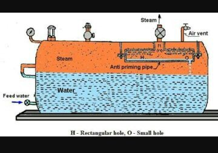